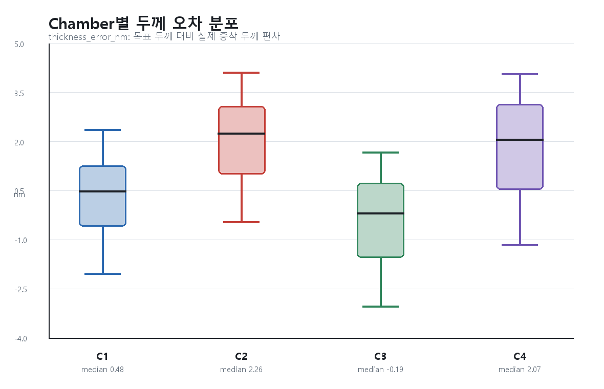
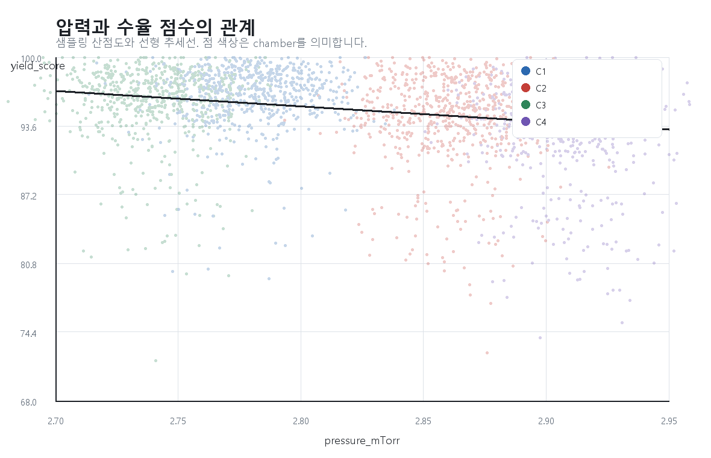

행/열24,576 x 29
fail rate11.45%
주요 결함 1순위particle
1. 원본 CSV 확인
원본 CSV를 읽은 뒤 컬럼명을 먼저 확인했다. 이 데이터는 panel x/y 위치, chamber, zone, 공정 조건, 두께 오차, particle, dark spot, pass/fail, yield_score를 함께 담고 있다.
초급 답안의 핵심은 그래프를 예쁘게 만드는 것보다, 어떤 컬럼이 어떤 측정값인지 확인한 뒤 적절한 그래프를 선택하는 것이다.
| column | dtype |
|---|---|
| lot_id | str |
| run_id | str |
| panel_id | str |
| tool_id | str |
| chamber | str |
| sample_id | str |
| x_index | int64 |
| y_index | int64 |
| x_mm | float64 |
| y_mm | float64 |
| zone | str |
| source_temp_c | float64 |
| substrate_temp_c | float64 |
| pressure_mTorr | float64 |
| oxygen_flow_sccm | float64 |
| nitrogen_flow_sccm | float64 |
| deposition_rate_a_s | float64 |
| target_thickness_nm | float64 |
| thickness_nm | float64 |
| thickness_error_nm | float64 |
| abs_error_nm | float64 |
| sheet_resistance_ohm_sq | float64 |
| luminance_cd_m2 | float64 |
| voltage_v | float64 |
| particle_count | int64 |
| dark_spot_count | int64 |
| defect_type | str |
| pass_fail | str |
| yield_score | float64 |
2. Boxplot

C2와 C4의 두께 오차가 양의 방향으로 치우쳐 있다. 즉 두 chamber는 목표보다 두껍게 증착되는 경향이 있고, 수율 저하 후보로 볼 수 있다.
3. Scatter Plot

압력과 yield_score 사이에는 약한 음의 경향이 보인다. 압력만으로 원인을 단정할 수는 없지만, C2와 C4의 조건 점검이 필요하다는 힌트를 준다.
4. Heatmap

PNL_A02의 edge 영역에 두께 오차 hotspot이 확인된다. x/y 좌표가 있는 데이터는 평균 표뿐 아니라 map으로 봐야 위치성 결함을 발견할 수 있다.
초급 결론
기본 시각화만으로도 C2/C4 chamber와 PNL_A02 edge 위치가 원인 후보로 좁혀진다. 다음 단계에서는 defect Pareto와 통계분석으로 이 후보가 수율에 실제로 연결되는지 확인한다.